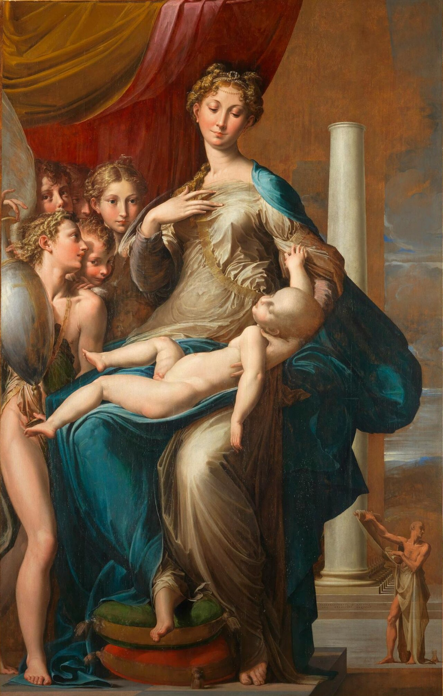
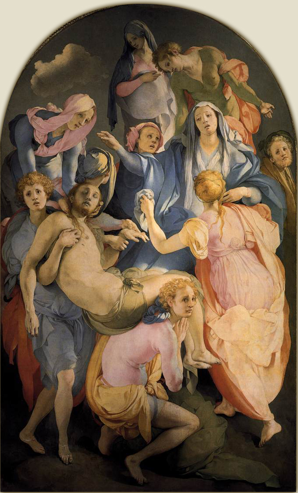
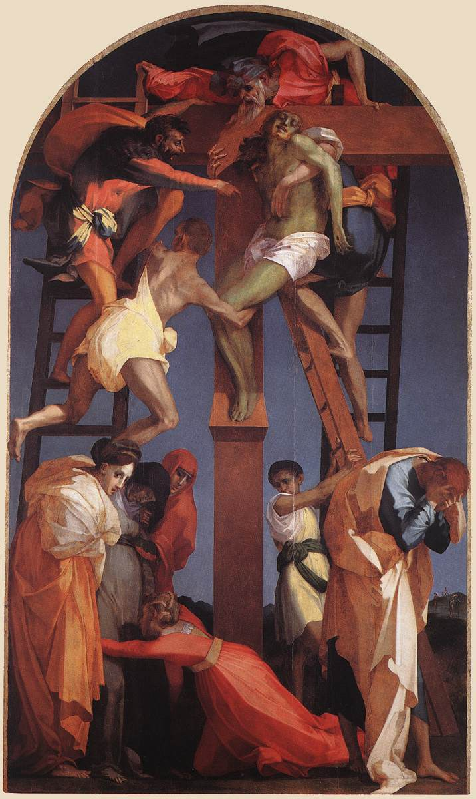
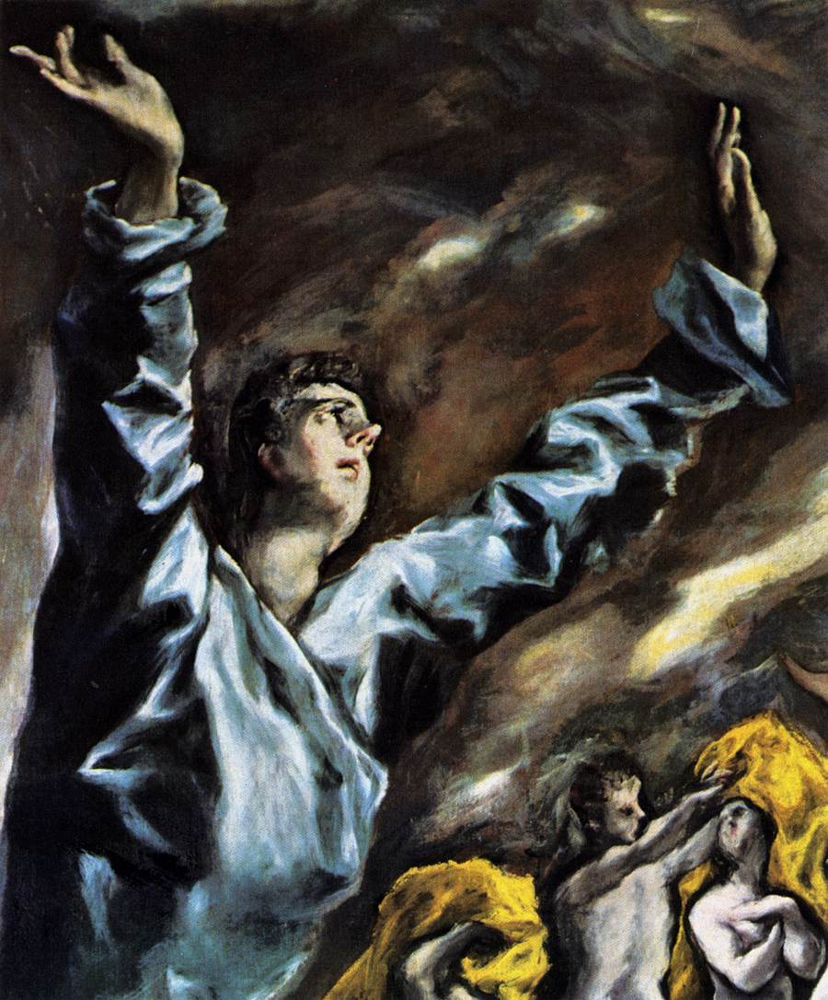
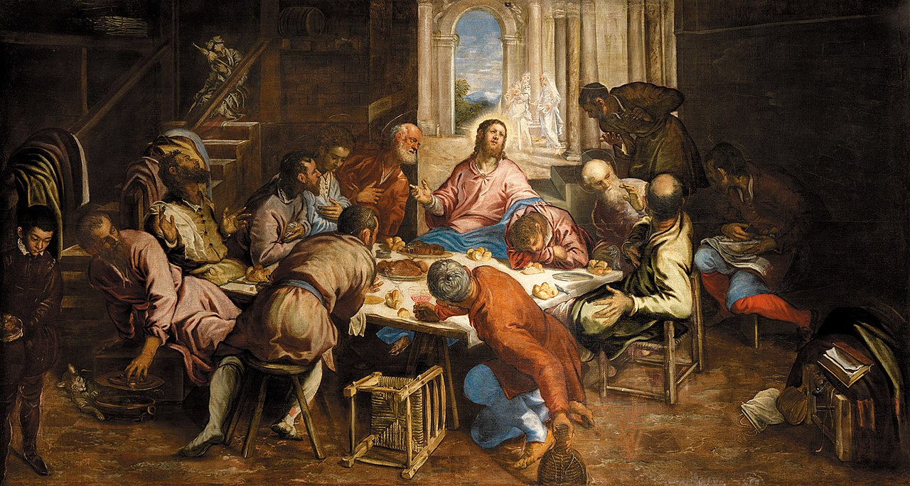
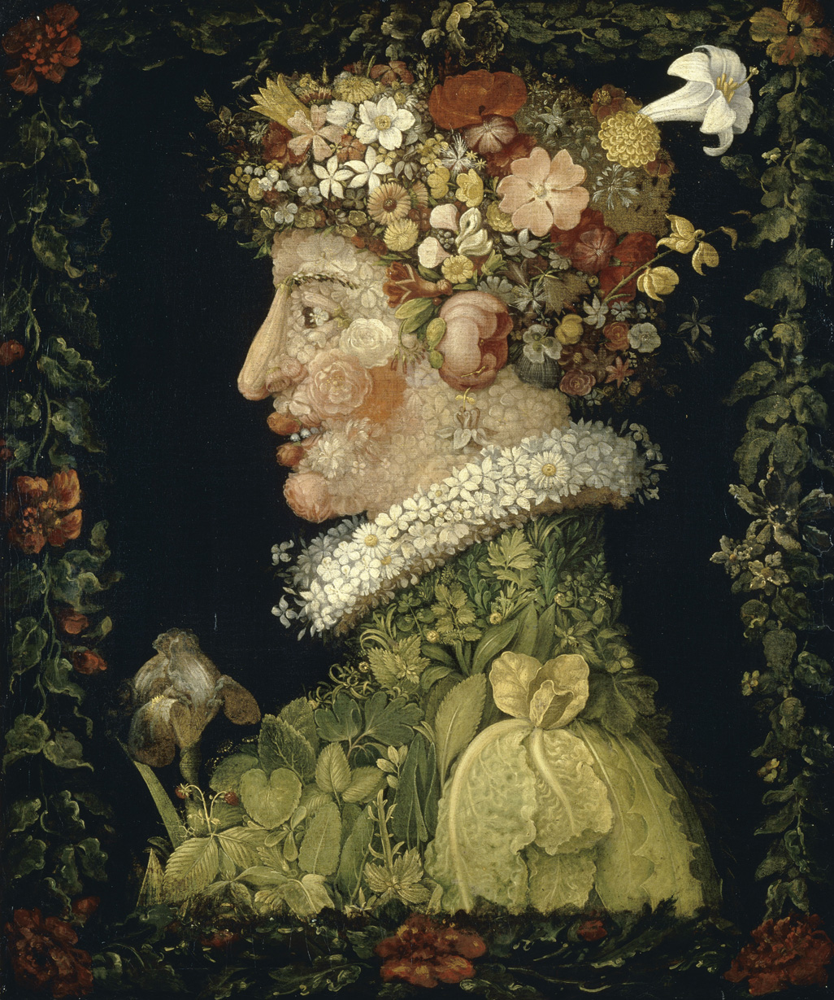
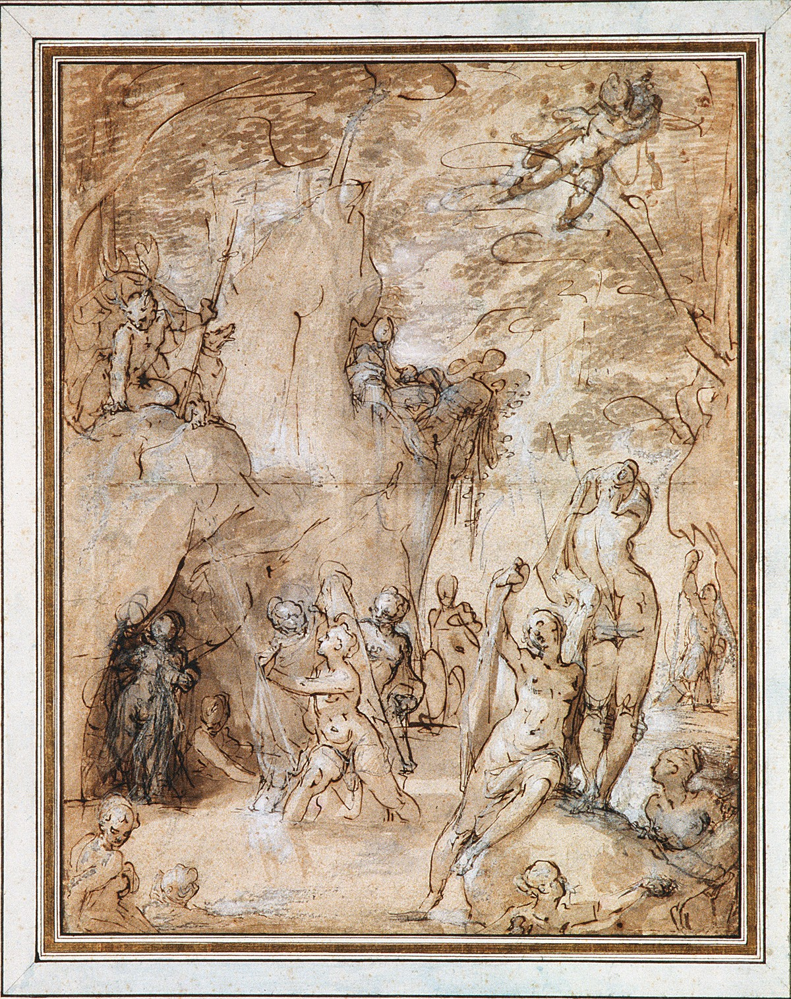
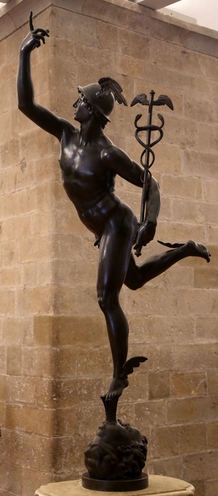
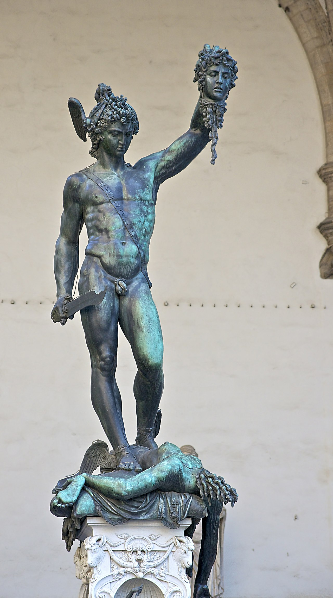

Meesterwerk: Madonna met de Lange Hals
Parmigianino, 1534-1540

⚜️ UITGEBREIDE STIJLFIGUREN
🎭 GEDISTENDEERDE PROPORTIES
Elongatie: Figuren worden uitgerekt, elegant maar onnatuurlijk. Parmigianino's Madonna heeft een lange hals, slanke vingers, onevenredige ledematen. Schoonheid gaat boven realisme.
Kleine hoofden: Hoofden zijn klein ten opzichte van lichamen. Dit creëert een aristocratische, verfijnde uitstraling.
🎭 COMPLEXE COMPOSITIES
Onmogelijke poses: Figuren draaien, buigen, wringen zich in onnatuurlijke houdingen. De "figura serpentinata" - de golvende, slangachtige pose.
Gelaagde ruimte: Geen duidelijk perspectief maar overlappende vlakken, ondiepte, claustrofobische ruimtes.
🎭 KLEUR EN LICHT
Kille kleuren: Roze, blauw, groen - maar niet warm. De kleuren zijn kunstmatig, niet natuurlijk.
Hard licht: Geen sfumato maar scherpe contrasten. Het licht is dramatisch, theatraal.
🎭 INTELLECTUELE KUNST
Ingewikkeldheid: De kunst vraagt interpretatie. Het is niet direct, niet voor iedereen. Het is kunst voor kenners.
Stijl boven inhoud: Hoe iets wordt gezegd is belangrijker dan wat er wordt gezegd. De vorm overheerst.
📚 TIJDSGEEST CONTEXT (1520-1600)
🌍 POLITIEK PERSPECTIEF: Een Wereld in Crisis en Transformatie
Het Maniërisme (1520-1600) ontwikkelde zich in een politieke context van diepe crisis en transformatie die de gevestigde orde van de Italiaanse Renaissance fundamenteel ondermijnde. De politieke structuur werd gekenmerkt door de ondergang van de Italiaanse onafhankelijkheid en de opkomst van Spaanse en Franse dominantie. De Italiaanse Oorlogen (1494-1559), waarbij Frankrijk, Spanje en het Heilige Roomse Rijk streden om controle over Italië, resulteerden in de verwoesting van steden, de verstoring van handel en de politieke onderwerping van de Italiaanse staten. De plundering van Rome in 1527 door de troepen van keizer Karel V was het symbolische en materiële keerpunt: de stad die het centrum van de Renaissance was geweest, werd geteisterd door moord, verwoesting en diefstal, wat een diepgaand trauma veroorzaakte dat de kunstenaars en intellectuelen van de tijd trof. De Contrareformatie, die formeel begon met het Concilie van Trente (1545-1563), introduceerde een nieuwe politieke en religieuze orde die kunst en cultuur strikter controleerde en ideologisch stuurde.
De sociale dynamiek werd gekenmerkt door de opkomst van hofcultuur en het patriciaat als nieuwe culturele elites. De Medici in Florence, de Farnese in Rome, en de Gonzaga in Mantua werden de belangrijkste patroons van kunst, waarbij ze kunstenaars in dienst namen om hun status, intellectuele verfijning en politieke legitimiteit te demonstreren. De kunstenaar evolueerde van handwerksman naar intellectueel, die zich bevond aan de hoven en in de kringen van humanisten, dichters en filosofen. De competatieve geest tussen kunstenaars, aangewakkerd door patroons die rivaliteiten stimuleerden (zoals de competitie tussen Michelangelo en Leonardo voor de muurschilderingen in het Palazzo Vecchio), dreef de artistieke innovatie naar nieuwe hoogten van virtuositeit. De druk om te overtreffen, te verrassen en te imponeren werd het motor van de maniëristische esthetiek.
De religieuze context werd gedomineerd door de Reformatie en Contrareformatie, die een diepe theologische en politieke splitsing in Europa creëerden. De Protestantse Reformatie (vanaf 1517) bekritiseerde de corruptie van de katholieke kerk en de verering van heiligenbeelden, wat leidde tot beeldenstormen in Noord-Europa. De Contrareformatie reageerde met een herbevestiging van de katholieke doctrine, maar ook met een verhoogde controle over artistieke expressie: het Concilie van Trente beval dat religieuze kunst duidelijk, theologies correct en emotioneel betrokken moest zijn. Deze nieuwe eisen, gecombineerd met de politieke onzekerheid en de intellectuele crisis van de Renaissance, schiepen een klimaat van artistieke vrijheid en restrictie, waarin kunstenaars kozen voor complexiteit, ambiguïteit en intellectualiteit boven de harmonie en duidelijkheid van de High Renaissance.
De verbinding tussen politiek en artistieke stijl was direct en bewust. De maniëristische esthetiek - met zijn verlengde proporties, onnatuurlijke posities, tegenstrijdige perspectieven en intellectuele complexiteit - weerspiegelde een wereld die haar zekerheden was verloren. De spanning tussen kunstmatigheid en natuur, tussen idealisme en realiteit, tussen harmonie en dissonantie, verbeeldde een politieke en sociale orde die uit balans was gebracht door oorlog, religieus conflict en intellectuele crisis. De kunstenaars keken niet meer naar de natuur als primaire bron, maar naar de kunst van de meesters - Michelangelo, Raphael, Leonardo - die ze bestudeerden, imiteerden en overtroffen in een spel van 'bella maniera'. De abstracte, intellectuele benadering, waarbij kunst werd gezien als 'idee' boven 'natuur', weerspiegelde de aristocratische hofcultuur die verfijning, virtuositeit en intellectuele spitsvondigheid boven directe emotie en naturalisme stelde. De maniëristische kunst, met zijn duistere iconografie, complexe allegorieën en gelaagde betekenissen, was een kunst voor ingewijden - een elitaire kunst die de culturele suprematie van de nieuwe aristocratische en kerkelijke elites visualiseerde.
Bronnen: Wikipedia - Mannerism, Italian Wars, Sack of Rome (1527), Counter-Reformation, Council of Trent, High Renaissance.
📖 LITERAIR PERSPECTIEF
- Petrarkisme: complexe, gekunstelde poëzie
- Metafysische dichters (Marino in Italië, Góngora in Spanje) zoeken naar verrassende beelden
- Castiglione's "Il Cortegiano" (1528) definieert de ideale hofman: elegant, geslepen, niet te oprecht
- Literatuur wordt een spel van stijl
🧠 PSYCHOLOGISCH PERSPECTIEF
Het Maniërisme ontstond in een periode van diepe psychologische crisis en culturele ontwrichting. De Reformatie had de religieuze eenheid van Europa verscheurd, Rome was geplunderd door de troepen van Karel V, en de ontdekking dat de aarde niet het middelpunt van het universum was had het mensbeeld fundamenteel aangetast. In deze context van onzekerheid en angst ontwikkelde zich een kunst die de harmonieuze zekerheden van de Hoogrenaissance verliet voor expressieve vervorming en intellectuele complexiteit. De mens van het Maniërisme leefde in een wereld die zijn evenwicht had verloren.
Psychologisch gezien kenmerkte deze periode zich door een diepe existentiële angst en een zekere neurotische spanning. Waar de Renaissance mens nog vertrouwde op rede en orde, ervaarde de Maniërist een fundamentele onzekerheid over de aard van de werkelijkheid. Dit vertaalde zich in kunst die bewust ambigu, gecompliceerd en verontrustend was. De kunstenaar, nu zich bewust van zijn eigen genialiteit maar ook van de beperkingen van het menselijk inzicht, creëerde werken die uitdaagden, verwarden en intrigeerden. Er was een zekere wanhoop in de zoektocht naar nieuwe vormen na de vermeende perfectie van Michelangelo en Rafaël.
De psychische toestand van de Maniëristische samenleving werd gekenmerkt door een diepe spanning tussen intellectueel vertoon en emotionele onrust. De ingewikkelde composities, de onnatuurlijke houdingen en de scherpe kleurcontrasten weerspiegelden een wereld die uit zijn voegen was gegroeid. De kunstenaar werkte in een staat van intellectuele en emotionele spanning, bewust zoekend naar effecten die de kijker zouden verrassen en verontrusten. Er was een zekere passiviteit en melancholie, een besef dat de grote dagen van de Renaissance voorbij waren en dat alleen nog via kunstgrepen nieuwe wegen konden worden geopend.
Emotioneel overheerste een sfeer van geraffineerde onbehagen en intellectueel ongemak. De langgerekte figuren van Pontormo en Rosso Fiorentino, de verwarrende ruimtelijke arrangementen van Tintoretto, de psychologische complexiteit van Bronzino's portretten - allemaal drukken ze een fundamentele onzekerheid uit over wat het betekent mens te zijn in een wereld die zijn oriëntatiepunten had verloren. De schoonheid was nog aanwezig, maar nu doordrenkt van een zekere verkilling en afstandelijkheid. Deze psychische crisis weerspiegelde de bredere culturele en religieuze turbulentie van de zestiende eeuw. De Reformatie had de religieuze zekerheden ondermijnd; de plundering van Rome (1527) had het ideaal van de klassieke harmonie aangetast. De maniëristische kunstenaar, werkend in deze sfeer van onzekerheid, zocht naar nieuwe vormen van expressie die de complexiteit en tegenstrijdigheid van de moderne ervaring konden verbeelden. De intellectuele onrust die kenmerkend was voor het Maniërisme was niet alleen een esthetische keuze, maar een weerspiegeling van een diepere existentiële angst over de plaats van de mens in een universum dat zijn ordenende principes leek te hebben verloren.
⚙️ HISTORISCH PERSPECTIEF
- De Grote Ontdekkingen verstoren het wereldbeeld
- Copernicus (1543) plaatst de zon in het centrum - een schok
- De pest keert terug
- De oorlogen zijn gruwelijker door buskruit
- De wereld is onstabiel, en de kunst reflecteert dat
🎭 FILOSOFISCH PERSPECTIEF
Het Maniërisme (1520-1600) ontwikkelde zich in een filosofische context van intellectuele crisis en spirituele onzekerheid, die werd veroorzaakt door de Reformatie, de Italiaanse Oorlogen en de plundering van Rome in 1527. Epistemologisch gezien stond het maniërisme in de traditie van de late Renaissance-humanisten, maar met een kritische houding ten opzichte van de klassieke harmonie en het rationalisme van de High Renaissance. De 'maniera' - de stijlvolle, kunstmatige benadering - was een reactie op de overweldigende perfectie van Raphael en Michelangelo, waarbij kunstenaars zochten naar nieuwe expressiemiddelen die verder gingen dan de natuurlijke imitatie. Michelangelo's latere werken (zoals de 'Giudizio Universale' in de Sixtijnse Kapel) toonden reeds een 'teratologische' stijl - een bewuste vervorming van de natuurlijke proporties - die maniëristen als Pontormo, Rosso Fiorentino en Bronzino verder ontwikkelden. Metafysisch gezien was het maniërisme geworteld in het neoplatonisme van de Renaissance, maar met een nadruk op de 'idea' boven de 'natura': de kunstenaar verkiest de 'disegno interno' (innerlijke tekening) boven de directe observatie van de natuur. Deze nadruk op het intellectuele concept boven het zintuiglijke vertaalde zich naar de stijlfiguren van het maniërisme: de 'figura serpentinata' (slangvormige houding), het 'non finito' (onvoltooid), het 'artificio' (kunstmatigheid) en het 'capriccio' (gril). De verlengde proporties, de onlogische ruimte, de 'acid' kleuren (zoals in Parmigianino's 'Madonna met de Lange Hals') verbeelden een wereld die haar klassieke zekerheden heeft verloren. Ethisch gezien stond het maniërisme in de context van de Contrareformatie, die kunstenaars confronteerde met nieuwe eisen: het Concilie van Trente (1545-1563) eiste dat religieuze kunst duidelijk, theologisch correct en emotioneel betrokken zou zijn. De maniëristen reageerden hierop met een esthetiek van ambiguïteit en intellectualiteit: de complexe iconografie van Bronzino's 'Venus, Cupido, Dwaasheid en Tijd' (ca. 1545) vereist een 'geleerde' kijker die de mythologische en allegorische verwijzingen kan duiden. De 'spiraalvormige' composities (zoals in Tintoretto's 'Het Laatste Avondmaal', 1594) verbeelden een spirituele onrust die past bij de religieuze crisis van de tijd. Esthetisch gezien ontwikkelde het maniërisme een 'anti-klassieke' schoonheidsideaal: de 'bella maniera' was niet de harmonie van Raphael, maar de 'strange beauty' van vervorming en kunstmatigheid. De invloed van Giorgio Vasari's 'Vite' (1550, 1568) - waarin kunstenaars als 'genieën' worden beschreven - versterkte het idee van de kunstenaar als 'intellectueel' die zijn eigen stijl creëert. De 'capriccio' en 'bizzarria' (bizarre ideeën) van de maniëristen verwezen naar een wereldbeeld waarin de natuur niet langer de maatstaf is voor kunst, maar het 'ingegno' (verstand) van de kunstenaar. De literaire invloed van het maniërisme - zoals in de 'concettismo' ( conceit) van de dichter Giambattista Marino - versterkte deze intellectuele benadering: kunst moest 'stupefacere' (verbazen) en 'deliziare' (verheugen), niet slechts 'imitare' (imiteren). De 'maniera' was daarmee een filosofisch statement: kunst is geen spiegel van de natuur, maar een 'prisma' dat de werkelijkheid breekt en hervormt. De maniëristische 'ambiguïteit' verwees naar een tijdperk van religieuze en politieke onzekerheid, waarin de klassieke zekerheden van de Renaissance waren verbroken.
Bronnen: Stanford Encyclopedia of Philosophy - 'Augustine', 'Neoplatonism', 'Medieval Political Philosophy'; Wikipedia - 'Mannerism', 'Italian Wars', 'Sack of Rome (1527)', 'Counter-Reformation', 'Council of Trent', 'High Renaissance', 'Giorgio Vasari', 'Concettismo'.
🎨 TIEN MEESTERWERKEN - GEDETAILLEERDE ANALYSE
1. "Madonna met de Lange Hals" (1534-1540) — Parmigianino
Galleria degli Uffizi, Florence · 216 × 132 cm · Olieverf op paneel
Achtergrond: Geschilderd voor de kerk van Santa Maria dei Servi in Parma. Parmigianino's meesterwerk en het summum van het Maniërisme. De Madonna's hals is onnatuurlijk lang, evenals haar vingers.
🔍 STIJLANALYSE
Proporties: De hals is dubbel zo lang als normaal. De vingers zijn spinnenachtig, elegant maar anatomisch onmogelijk. Dit is geen fout maar bewuste stijlkeuze.
Compositie: Madonna vult het hele beeld, de zuil erachter is niet ondersteuning maar decoratie. De ruimte is onlogisch - waar staat ze?
De engelen: De engel onderaan kijkt uit het beeld, naar iets wat wij niet zien. Hij speelt met zijn voet, verveeld. Dit is geen heilige conversatie maar een toneelstuk.
Kleur: Roze, blauw, goud - de kleuren van de hemel, maar koud, kunstmatig. Het is schoonheid zonder warmte.
Onafgewerkt: Parmigianino werkte er zes jaar aan en stierf zonder het af te maken. De linkervoet van Madonna ontbreekt. Dit maakt het mysterieuzer.
2. "Kruisafneming" (1525-1528) — Jacopo Pontormo
Santa Felicita, Florence · 313 × 192 cm · Olieverf op paneel

Achtergrond: Geschilderd voor de Capponi kapel in Florence. Pontormo werkte er drie jaar aan in volledige afzondering. Het toont geen kruis, geen landschap, alleen een groep rouwende figuren in de leegte.
🔍 STIJLANALYSE
Geen kruis: Het kruis ontbreekt. Christus' lichaam zweeft, gedragen door de treurenden. De realiteit is opgeheven - dit is pure emotie, geen verhaal.
Kleur: Roze, blauw, wit - pasteltinten in een droeve scène. Het is bijna luchtig, als een droom. De kleuren zijn niet realistisch maar expressief.
Compositie: De figuren vormen een wervel, een spiraal. Er is geen centrum, geen rustpunt. De ogen dwalen van gezicht naar gezicht, zoekend naar houvast.
De ruimte: Een vage achtergrond, misschien een heuvel, misschien de hemel. De figuren zweven in een vacuüm. Dit is claustrofobisch, intiem, angstaanjagend.
Psychologie: Maria's gezicht is verstild, bijna bevroren in verdriet. De andere figuren hebben geforceerde poses. Het is theater van de wanhoop.
3. "Kruisafneming" (1521) — Rosso Fiorentino
Pinacoteca Comunale, Volterra · 375 × 196 cm · Olieverf op paneel

Achtergrond: Geschilderd voor de kathedraal van Volterra. Rosso was een van de eerste en meest extreme Maniëristen. Dit werk schokte zijn tijdgenoten met zijn geweld en kleur.
🔍 STIJLANALYSE
Geweld: De lichamen zijn uitgerekt, verwrongen, in onmogelijke poses. De man links lijkt te vallen, de vrouw rechts krijgt in haar gezicht. Dit is fysieke pijn als metafoor voor spirituele pijn.
Kleur: Felblauw, roze, geel - niet natuurlijk maar expressief. De kleuren schreeuwen. Het is bijna grotesk, bijna grappig, maar tragisch.
Leegte: De achtergrond is grijs, leeg, als een toneeldecor. De figuren zijn op een podium, voor ons uitgestald. We zijn voyeurs van hun verdriet.
Invloed: Dit werk beïnvloedde generaties. De extreme expressie, de vervorming - het is de voorloper van het moderne expressionisme.
4. "De Opening van het Vijfde Zegel" (1608-1614) — El Greco
Metropolitan Museum of Art, New York · 225 × 193 cm · Olieverf op doek

Achtergrond: El Greco's laatste meesterwerk, onvoltooid bij zijn dood. Gebaseerd op Openbaring 6:9-11 - de zielen van de martelaren vragen om wraak. Het is visionair, mystiek, bijna abstract.
🔍 STIJLANALYSE
Figures: De naakte man (Sint Johannes?) reikt omhoog naar de hemel. Zijn lichaam is blauwachtig, gespannen, uitgerekt. De andere figuren zijn schimmen, geesten.
Kleur: Blauw, geel, groen - onnatuurlijke huidtinten. Het is een nachtscène maar fel verlicht van boven. De kleuren zijn spiritueel, niet materieel.
Abstractie: De figuren zijn bijna niet-figuratief. De compositie is een werveling van vormen. Dit is Maniërisme dat naar modernisme wijst.
Spanning: De verticale strekking, de uitgestrekte handen, de opgeheven gezichten - alles wijst omhoog naar het goddelijke. Het is verlangen verbeeld.
5. "Het Laatste Avondmaal" (1592-1594) — Tintoretto
San Giorgio Maggiore, Venetië · 365 × 568 cm · Olieverf op doek

Achtergrond: Een van Tintoretto's laatste werken, geschilderd voor het klooster van San Giorgio Maggiore. Een radicale herinterpretatie van Leonardo's beroemde versie.
🔍 STIJLANALYSE
Diagonaal: Tegenover Leonardo's symmetrie gebruikt Tintoretto diagonalen. De tafel loopt schuin, de figuren zijn verspreid. Het is dynamisch, chaotisch.
Licht: Het licht komt van linksboven - een overnatuurlijke gloed. De engelen zweven in dit licht. Het is Venetiaans kleurgebruik maar met Maniëristische dramatiek.
Realisme: Bedienden, honden, katten - het dagelijks leven dringt binnen in het heilige moment. Christus is bijna verborgen in de chaos. Dit is religie als theater.
Snelheid: Tintoretto werkte snel, met brede penseelstreken. Je ziet de urgentie, de extase. Dit is Maniërisme met barokke energie.
6. "Allegorie van Venus en Cupido" (1545) — Agnolo Bronzino
National Gallery, Londen · 146 × 116 cm · Olieverf op paneel

Achtergrond: Geschilderd voor Frans I van Frankrijk. Een allegorie van liefde, maar ook van bedrog. Volgens sommigen een cadeau van Cosimo I de' Medici aan de Franse koning, met een dubbelzinnige boodschap.
🔍 STIJLANALYSE
Symboliek: Venus kust Cupido (haar zoon!), een meisje (het Verlangen?) trekt haar haar, een oude vrouw (Jaloezie?) kijkt toe. Links: een figuur die een masker afneemt (Bedrog?).
Kleur: Porseleinachtige huid, heldere kleuren, geen schaduw. Het is oppervlakkig schoon, als email. De glans is onnatuurlijk, kunstmatig.
Stijl: De "bronziña" - de bronzen glans. Bronzino's handelsmerk. Het is koud, elegant, bijna wreed in zijn perfectie.
Moraal: De liefde is bedrog, plezier wordt pijn. Het is een moreel kompas vermomd als erotiek. Typisch Maniëristisch: het is nooit wat het lijkt.
7. "Lente" (1573) — Giuseppe Arcimboldo
Louvre, Parijs · 66 × 51 cm · Olieverf op paneel

Achtergrond: Onderdeel van een serie van vier seizoenen, geschilderd voor Keizer Maximiliaan II. Arcimboldo was hofkunstenaar in Praag, beroemd om zijn composite hoofden.
🔍 STIJLANALYSE
Composite: Het hoofd is gemaakt van bloemen, bladeren, planten. Van dichtbij zie je alleen groente, van veraf een gezicht. Het is een visuele puzzel.
Natuur: De natuur wordt mens - of de mens wordt natuur. Het is een allegorie van de verbondenheid tussen mens en kosmos, maar ook een grap.
Stijl: Botanische precisie gecombineerd met absurde fantasie. Elk blad is herkenbaar, maar het geheel is onmogelijk. Maniërisme als intellectueel spel.
Invloed: Arcimboldo was vergeten na zijn dood maar herontdekt in de 20e eeuw. Surrealisten zoals Dalí bewonderden hem. Hij was eeuwen vooruit op zijn tijd.
8. "Diana en Actaeon" (1590-1595) — Bartholomeus Spranger
Privécollectie · 110 × 85 cm · Olieverf op koper

Achtergrond: Spranger was een Nederlander die carrière maakte aan het keizerlijke hof in Praag. Zijn werk is sensueel, elegant, gekunsteld - het summum van het Noordelijke Maniërisme.
🔍 STIJLANALYSE
Erotiek: Diana en haar nimfen zijn naakt, sierlijk, bevallig. Actaeon verrast hen. Het is een excuus voor naaktheid, verpakt in mythologie.
Poses: De "figura serpentinata" in volle glorie - golvende lichamen, gedraaide torso's. Geen enkele figuur staat rechtop. Het is dans, beweging, gratie.
Kleur: Zacht, porseleinachtig, glad. Het koperen paneel geeft een glans. Dit is kunst als juweel, als decoratie voor de elite.
Mythologie: Het verhaal (Actaeon wordt door zijn eigen honden verscheurd) is bijzaak. Wat telt is de schoonheid, de elegantie, het spel van lichamen.
9. "Mercurius" (1580) — Giambologna
Museo Nazionale del Bargello, Florence · 180 cm hoog · Brons

Achtergrond: Geschilderd (nou ja, gebeiteld) voor de Villa Medici. Giambologna's meest beroemde beeld, het symbool van de Maniëristische sculptuur. Mercurius staat op één been, de wind blaast hem voort.
🔍 STIJLANALYSE
Contrapposto: Maar dan extreem. Het lichaam draait, buigt, wikkelt zich om zijn as. Van welke kant je ook kijkt, je ziet een andere pose. Dit is beeldhouwkunst als choreografie.
Oppervlak: Glad, gepolijst brons. Geen ruwheid, alleen glans. Het is kunstmatig, als Maniëristische schilderkunst maar dan in 3D.
Beweging: Mercurius lijkt te zweven, te vliegen. De ene arm wijst omhoog (naar de goden), de andere arm wijst naar beneden (naar de mensen). De boodschapper tussen hemel en aarde.
Schoonheid: Het gezicht is leeg, ideaal, niet persoonlijk. Dit is geen portret maar een type - de jeugd, de gratie, de goddelijke boodschapper.
10. "Perseus met het Hoofd van Medusa" (1545-1554) — Benvenuto Cellini
Loggia dei Lanzi, Florence · 319 cm hoog · Brons

Achtergrond: Gesmeed (letterlijk, Cellini was ook goudsmid) voor Cosimo I de' Medici. Perseus toont trots het hoofd van Medusa, terwijl hij zelf bloedt. Cellini's autobiografie beschrijft de dramatische creatie.
🔍 STIJLANALYSE
Complexiteit: Drie figuren in één beeld: Perseus (held), Medusa (dode), Pegasus (uit haar bloed geboren). De compositie is gelaagd, verticaal, horizontaal - je kunt er omheen lopen.
Bloed: Perseus' voet bloedt waar hij Medusa's hoofd raakt. Zelfs de overwinnaar wordt gewond. Het is een les: triomf kost altijd offers.
Gelaat: Perseus' gezicht is een zelfportret van Cellini - arrogant, trots, mooi. De kunstenaar identificeert zich met de held.
Techniek: Brons gieten in één stuk - een technisch wonder. De basis toont kleine figuren (onderwereld bovenop?), de mythologie als decor.
📚 CONCLUSIE: DE VAL VAN DE RENAISSANCE
Maniërisme leert ons:
- Dat schoonheid niet natuurlijk hoeft te zijn: Gekunsteld kan ook mooi zijn
- Dat kunst intellectueel mag zijn: Het hoeft niet voor iedereen te zijn
- Dat stijl boven inhoud kan gaan: Hoe je het zegt telt meer dan wat je zegt
- Dat crisis kunst voedt: Angst en onzekerheid leiden tot innovatie
- Dat het oude ideaal dood is: Harmonie is passé, complexiteit is in
Maniërisme is de hangover van de Renaissance - maar ook de voorbode van de Barok.